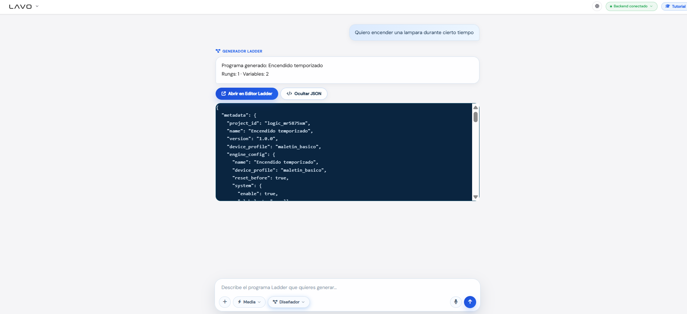
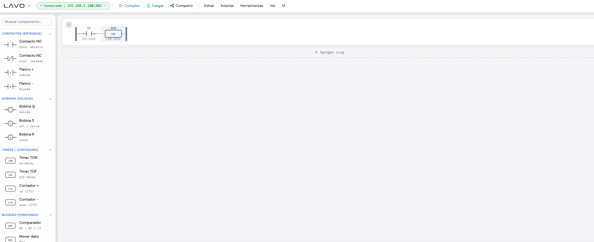
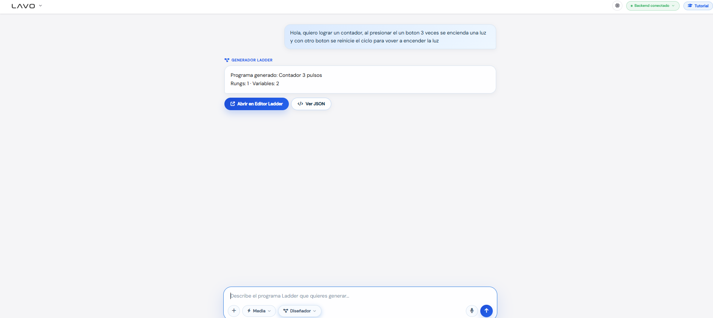
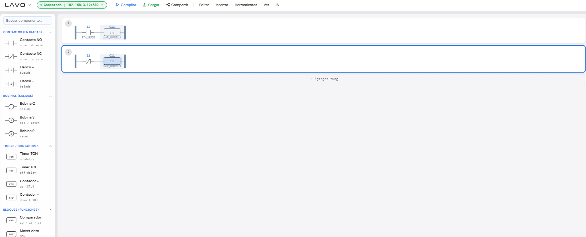

Desarrollo de LadderVoice / LAVO
Esta página documenta con mayor detalle el funcionamiento del proyecto LAVO: su objetivo, arquitectura, flujo de uso, frontend, backend, modelo de IA, validación, editor Ladder, simulación, relación con el PLC Horner XL4 / XC1E5 y las métricas evaluadas durante las pruebas.
¿Qué es LadderVoice?
LadderVoice, también llamado LAVO, es un sistema web que busca facilitar la creación, visualización y prueba de lógica Ladder para PLC a partir de instrucciones en lenguaje natural. El usuario puede escribir o dictar una instrucción como “con I1 enciende Q10 y con I2 apágala”, y el sistema la transforma en una estructura lógica que puede visualizarse como diagrama Ladder.
La idea central del proyecto no es reemplazar por completo la programación industrial tradicional, sino crear una capa asistida por inteligencia artificial que ayude a convertir necesidades humanas en una lógica estructurada, validable y entendible antes de llevarla al PLC.
Para lograrlo, el proyecto separa responsabilidades: el frontend se encarga de la experiencia visual, el editor Ladder, el chat y la simulación; el backend se encarga de la transcripción de voz, la generación lógica con IA y la comunicación opcional con el PLC.
La programación PLC puede ser poco accesible para usuarios nuevos
Los PLCs se programan normalmente con herramientas especializadas como Cscape. Estas herramientas son potentes, pero requieren conocer símbolos, contactos, bobinas, enclavamientos, timers, contadores, direcciones de entradas y salidas, y el flujo de escaneo del PLC.
En un entorno educativo o de prototipado, muchas veces la persona sabe qué quiere que haga el sistema, pero no sabe todavía cómo convertirlo en lógica Ladder. Por ejemplo, puede saber que quiere “un botón de arranque, un botón de paro y una lámpara que quede encendida”, pero no necesariamente sabe construir el enclavamiento con contacto de retención.
Barrera técnica
El usuario debe conocer sintaxis, direcciones, estructura Ladder y lógica de control.
Errores comunes
Una mala interpretación puede activar salidas incorrectas o generar lógica incompleta.
Uso educativo
El proyecto ayuda a explicar cómo una instrucción humana se convierte en lógica Ladder.
Convertir lenguaje natural en lógica Ladder validable
El objetivo principal de LAVO es permitir que una instrucción escrita o hablada se convierta en una lógica de control estructurada. Esa lógica debe poder revisarse visualmente, simularse y, si se cuenta con el entorno físico correcto, aplicarse al PLC mediante registros de configuración.
Objetivos específicos
- Capturar instrucciones por texto o voz desde una página web.
- Transcribir audio a texto usando un modelo de voz a texto.
- Interpretar la intención del usuario con un LLM.
- Generar un JSON lógico simple, limitado y validable.
- Compilar ese JSON lógico a una representación Ladder visual.
- Permitir simulación básica desde el navegador.
- Preparar una estrategia para controlar el PLC usando registros maestros.
- Documentar resultados y métricas de generación para evaluar el comportamiento del modelo.
Separación entre interfaz, inteligencia artificial y control físico
La arquitectura se diseñó por capas para que cada parte tenga una responsabilidad clara. Esto evita que la IA tenga control directo sobre el PLC y permite que el frontend funcione como una herramienta visual independiente, mientras el backend concentra la comunicación con los modelos y servicios externos.
| Capa | Responsabilidad | Archivos o elementos relacionados |
|---|---|---|
| Frontend web | Interfaz principal, chat IA, documentación, editor Ladder, render, simulación y validación visual. | index.html, ladder.html, documentacion.html, assets/js/* |
| Editor Ladder | Convierte estructuras de lógica en rungs, contactos, bobinas, ramas y elementos visibles. | assets/js/ladder/app.js, renderer.js, simulator.js |
| Compilador lógico | Recibe JSON lógico simple y lo transforma en un esquema Ladder renderizable. | logicToSchema.js, validate.js, schema.js |
| Backend IA | Recibe audio o texto, llama a modelos de IA, genera respuestas estructuradas y devuelve JSON al frontend. | Backend separado desplegado en Render / FastAPI |
| Puente PLC | Permite escribir registros en el PLC Horner mediante Modbus TCP cuando se trabaja localmente. | Script local de aplicación al PLC y endpoint de aplicación |
Flujo general:
Usuario
→ escribe o dicta una instrucción
→ frontend captura texto/audio
→ backend transcribe si hay audio
→ backend interpreta con LLM
→ LLM devuelve JSON lógico
→ frontend valida el JSON
→ frontend compila a Ladder
→ frontend renderiza y simula
→ si aplica, backend local escribe registros al PLCDe una frase hablada a un programa Ladder visual
La parte visual del proyecto
El frontend es la única parte que se modifica con este cambio. Está compuesto por páginas HTML, estilos CSS y módulos JavaScript. Su objetivo es que el usuario pueda interactuar con LAVO sin tener que ver directamente el backend ni las llamadas a los modelos.
Páginas principales del frontend
| Página | Función dentro del proyecto |
|---|---|
index.html |
Entrada principal tipo Chat IA. Sirve para preguntar, explicar o pedir apoyo al asistente inteligente. |
ladder.html |
Editor visual Ladder. Aquí se ve, genera, valida, simula y manipula la lógica de control. |
documentacion.html |
Página de explicación técnica del sistema, su arquitectura, flujo, decisiones y métricas. |
Comparacion_Prompts_Disenador.html |
Reporte externo de métricas evaluadas. Se abre desde esta documentación mediante un enlace al final. |
Módulos importantes del frontend
assets/js/main.js: controla interacción general de la página principal.assets/js/copilot.js: maneja la experiencia del chat IA.assets/js/ladder/app.js: orquesta el editor Ladder.assets/js/ladder/chat.js: conecta el panel de chat con la generación de lógica.assets/js/ladder/generate.js: centraliza la generación desde texto o JSON lógico.assets/js/ladder/gen-bridge.js: expone funciones globales para conectar páginas no modulares con el generador.assets/js/ladder/validate.js: valida que la lógica recibida sea compatible con el contrato del proyecto.assets/js/ladder/compiler/logicToSchema.js: convierte JSON lógico en un esquema Ladder visual.assets/js/ladder/renderer.js: dibuja el Ladder en pantalla.assets/js/ladder/simulator.js: permite probar la lógica desde el navegador.
Visualización, simulación y validación del programa
El editor Ladder es la parte donde la idea generada por IA se vuelve visible. En vez de mostrar solo un JSON, el editor permite ver contactos, salidas, ramas y elementos de control de una forma más cercana a cómo se trabaja en un entorno PLC.
Funciones principales
Generación
Recibe instrucciones y genera lógica Ladder usando el backend de IA.
Validación
Revisa que entradas, salidas, modos, timers y contadores sean válidos.
Simulación
Permite probar entradas y ver cómo deberían responder las salidas.
Por qué es importante el editor
La IA puede cometer errores si se le deja generar estructuras libres. Por eso el editor funciona como filtro visual y lógico: muestra lo que el sistema entendió, permite revisarlo y evita aplicar una lógica confusa sin validación previa.
Servicios de IA y comunicación
Aunque este cambio no modifica el backend, es importante documentar su papel. El backend actúa como intermediario entre el frontend y los servicios de IA. También puede servir como puente local para comunicación con el PLC, dependiendo del entorno de ejecución.
Responsabilidades del backend
- Recibir audio desde el frontend.
- Convertir audio a texto mediante un modelo STT.
- Enviar instrucciones de texto al modelo LLM.
- Forzar que el modelo responda en formato JSON lógico.
- Devolver al frontend una respuesta limpia y validable.
- Guardar o consultar memoria de ejemplos cuando el flujo lo requiere.
- Aplicar configuración al PLC mediante registros cuando se ejecuta localmente.
Endpoints documentados
| Endpoint | Descripción |
|---|---|
POST /transcribir |
Recibe audio y devuelve texto transcrito. |
POST /voz-a-ladder |
Flujo completo de voz a una estructura Ladder. Fue útil para pruebas iniciales. |
POST /generar-ladder |
Genera una estructura de Ladder de forma más directa a partir de texto. |
POST /generar-logica |
Endpoint principal para obtener JSON lógico simple a partir de lenguaje natural. |
POST /aplicar-plc |
Aplica una configuración al PLC mediante escritura de registros. |
GET /plc/escanear |
Busca dispositivos Modbus TCP disponibles en la red local. |
POST /feedback |
Registra si una respuesta fue aceptada, corregida o rechazada. |
GET /memoria |
Consulta ejemplos guardados para mejorar generaciones futuras. |
La IA responde con una estructura limitada y revisable
El contrato de JSON lógico es la parte más importante para controlar el comportamiento de la IA. En lugar de pedirle que genere un programa Ladder completo con coordenadas o elementos visuales, se le pide una descripción estructurada de la intención de control.
Ejemplo de instrucción
Usuario:
"Genera una lógica de enclavamiento donde I1 sea arranque,
I2 sea paro y Q10 quede encendida hasta presionar I2."Ejemplo de salida esperada
{
"name": "Enclavamiento_Inicio_Paro",
"device_profile": "maletin_basico",
"reset_before": true,
"system": {
"enable": true,
"global_stop": null
},
"outputs": [
{
"output": "Q10",
"logic": {
"mode": "enclavado",
"start": "I1",
"stop": "I2"
},
"timer": null,
"counter": null,
"expr": "(I1 + Q10) * !I2",
"comment": "I1 arranca y enclava Q10; I2 detiene la salida."
}
]
}Ventajas de este enfoque
- Reduce respuestas ambiguas del modelo.
- Evita que la IA invente elementos Ladder no soportados.
- Permite validar antes de renderizar.
- Facilita convertir la lógica a registros del PLC.
- Hace más claro qué entendió el modelo.
- Permite comparar resultados en pruebas repetidas.
Control físico sin descargar un programa nuevo cada vez
Para el entorno físico se considera un PLC Horner XL4 / XC1E5 usando Cscape. Una decisión clave del proyecto fue no intentar reemplazar Cscape desde Python.En su lugar, se propone dejar cargado en el PLC un programa Ladder maestro que contenga y lea registros de configuración.
Así, Python no tiene que generar y descargar un programa completo cada vez. Solo cambia valores en registros. El PLC ya tiene una lógica base que interpreta esos valores y decide qué salida se activa, bajo qué modo y con qué condiciones.
PLC objetivo
- PLC: Horner XL4 / XC1E5.
- Software: Cscape.
- Comunicación: Modbus TCP.
- Puerto típico: 502.
- Entradas usadas en pruebas: I1, I2, I3, I4, I7.
- Salidas usadas en pruebas: Q10, Q11, Q12.
Idea conceptual de registros
Bloques conceptuales:
Q10 → registros de configuración para salida 1
Q11 → registros de configuración para salida 2
Q12 → registros de configuración para salida 3
Cada bloque puede guardar:
- salida habilitada
- modo de operación
- entrada de arranque
- entrada de paro
- timer
- contador
- reset
- parámetros auxiliaresModos de operación
| Modo | Descripción | Ejemplo |
|---|---|---|
directo |
La salida sigue directamente el estado de una entrada. | I1 activa Q10 mientras I1 esté presionada. |
enclavado |
La salida queda retenida después del arranque hasta recibir paro. | I1 enciende Q10; I2 apaga Q10. |
timer |
Agrega comportamiento temporal como retardo o pulso. | I1 activa Q10 después de cierto tiempo. |
counter |
Activa una salida después de cierto número de eventos. | Después de 3 pulsos en I1, se activa Q10. |
La IA no debe tener control directo sin revisión
Un sistema que genera lógica para PLC debe ser cuidadoso. Aunque el proyecto funciona como prototipo, la lógica de control puede representar acciones físicas reales. Por eso se usan capas de validación antes de renderizar o aplicar cualquier configuración.
Validaciones importantes
- Comprobar que las entradas solicitadas existan en el perfil del dispositivo.
- Comprobar que las salidas solicitadas estén permitidas.
- Rechazar modos de operación desconocidos.
- Evitar respuestas que no sean JSON válido.
- Evitar instrucciones ambiguas que no puedan convertirse de forma segura.
- Separar generación lógica de aplicación física al PLC.
- Mostrar al usuario lo que el modelo entendió antes de aplicar cambios.
Principio de diseño seguro
La IA interpreta.
El frontend valida.
El compilador estructura.
El usuario revisa.
El PLC ejecuta solamente una lógica previamente controlada.Comparación de prompts del modo Diseñador
Además de la documentación técnica, el proyecto incluye una evaluación de métricas sobre prompts del modo Diseñador. En esa comparación se revisan pruebas automáticas del endpoint de generación lógica, midiendo aspectos como ciclos completados, JSON válido, esquema válido, interpretación correcta, latencia y consistencia de respuesta.
El reporte se encuentra en el archivo Comparacion_Prompts_Disenador.html. Para que el
botón funcione, ese archivo debe estar colocado en la raíz del frontend, junto a
documentacion.html.
Evidencia de funcionamiento en el PLC físico
Esta sección reúne los videos e imágenes obtenidos durante las pruebas del sistema sobre el PLC. Cada resultado demuestra que la lógica generada y aplicada se comporta como se esperaba: enclavamiento, botón de paro, temporizador y contador.
Enclavamiento
Prueba de la lógica de enclavamiento: una entrada activa la salida y ésta se mantiene encendida (se enclava) aunque se suelte el botón.
Segunda toma del enclavamiento, mostrando el ciclo completo de encendido y apagado desde otra perspectiva o instrucción.
Botón de paro
Demostración del botón de paro: al accionarlo se corta la salida y el sistema deja de operar de forma inmediata.
Segunda prueba del botón de paro, verificando que el paro tiene prioridad sobre la lógica de encendido.
Temporizador (timer)
Prueba del temporizador: la salida se activa o desactiva tras el retardo de tiempo configurado en la lógica.

Captura de la configuración/estado del temporizador en la interfaz o en el PLC.

Segunda captura del temporizador, mostrando otra fase o parámetro del mismo comportamiento.
Contador
Prueba del contador: la salida se activa al alcanzar el número de pulsos/eventos definido en la lógica.

Captura del contador antes de alcanzar el valor objetivo (conteo en progreso).

Captura del contador al llegar al valor configurado y activar la salida correspondiente.
assets/resultados/ y conservan el
mismo nombre original usado en la carpeta de resultados.
Herramientas que apoyaron el desarrollo
LAVO fue desarrollado como proyecto académico de prospectiva tecnológica, combinando automatización, desarrollo web, programación en Python, integración con IA y pruebas orientadas a PLC.
Herramienta de apoyo para estructurar código, refactorizar partes del proyecto, organizar módulos y acelerar la integración entre frontend, backend y generación lógica.
Utilizado para definir arquitectura, revisar código, explicar conceptos de PLC, documentar decisiones técnicas y ordenar el desarrollo paso a paso.
Usado para contrastar ideas, resolver dudas puntuales y apoyar algunas decisiones de diseño.
API usada para transcripción de voz con Whisper y generación de lógica estructurada con modelos LLM.
Considerado como alternativa para ejecutar modelos locales y comparar enfoques de asistencia con IA.